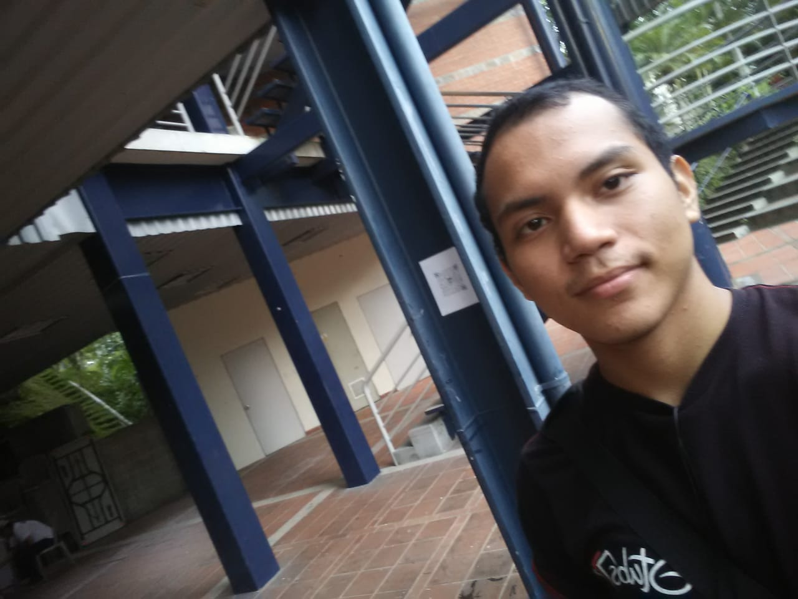

Dia 1
El primer dia fue un poco extraño, ya que al finalizar la clase se colocò el video de un hombre con mascara que amenazaba la universidad, diciendo que la haria explotar.
Lo mas curioso fue el video siguiente, una persona anonima llamada Kurt que pedia nuestra ayuda. El reto era un poco diferente a lo esperado; era hacer una funcion en postgres para verificar la autenticidad de un dui dado, al cumpplir eso el siguiente dia se daria la siguiente pista.
Dia 2

El segundo dia, al terminar la consulta, se nos decia que buscaramos en el polideportivo de la UCA, mas exactamente, por la mesas.
Hallamos la segunda pista, en la que ya no era Kurt, sino una chica llamada Ada Jarvis, que nos pedia hacer una funcion que funcionara al crear dos Triggers.
Dia 3
El tercer dia procedimos a buscar de nuevo otra pista, que no pudimos encontrar al tener dificultades en la consulta, que posteriormente hallamos cerca de la rampa en las aulas D.
Ese dia obtuvimos un audio de como Ada y Kurt conocieron a Ale Rav y como habia cambiado con el paso del tiempo.
Dia 4
El cuarto dia en la clase de bases salimos a investigar y justamente llego un dron con la siguiente y ultima pista para atrapar a Ale Rav.
Erauna funcion que borrara elementos de una subcalse al ser eliminado tambien de la superclase, al final nos dijeron que el desenlace seria el dia siguiente a las 5pm en una magna.
Dia 5

Este dia se nos aparecio Kurt en persona y nos dijo que habia recabado suficiente informacion para poder denunciar a Ale Rav, pero de manera repentina fallecio.
Al caer dejo un QR que al escanearlo tenia al culpable de todo, era el mismisimo profesor Varela!